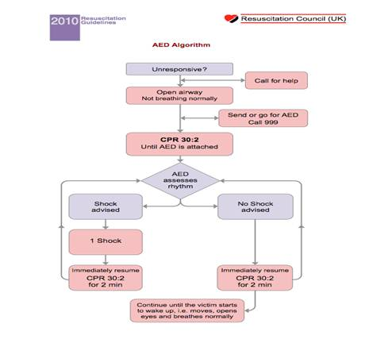
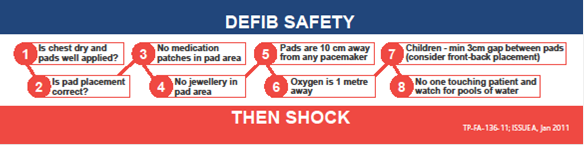
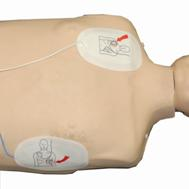
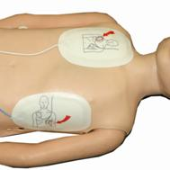

Royal National Lifeboat Institution
Royal National Lifeboat InstitutionDefibrillator and associated kit
The defibrillator is a device that delivers a therapeutic dose of electrical energy to the affected heart. This electrical impulse actually in effect stops the heart in order to attempt to restart it.
The algorithm below details where a defibrillator would come into use during a resuscitation.

Attached onto the defibrillator there is a safety sticker which details the safety checks that much be performed in order to defibrillate safely.

Pad placement is also important and is shown in the pictures

Adult pad placement

Child pad placement
Additional kit with the defibrillator includes a set of defibrillator pads, a pair of shears to cut through any clothing, a razor to shave the pad area if required and a towel to dry the patient if they are wet.